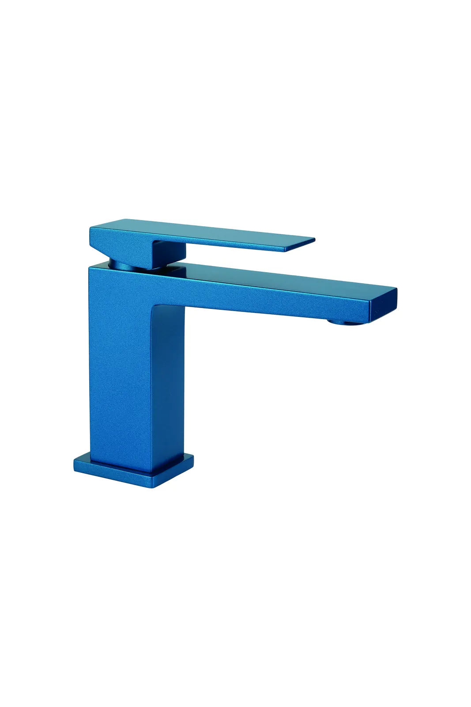
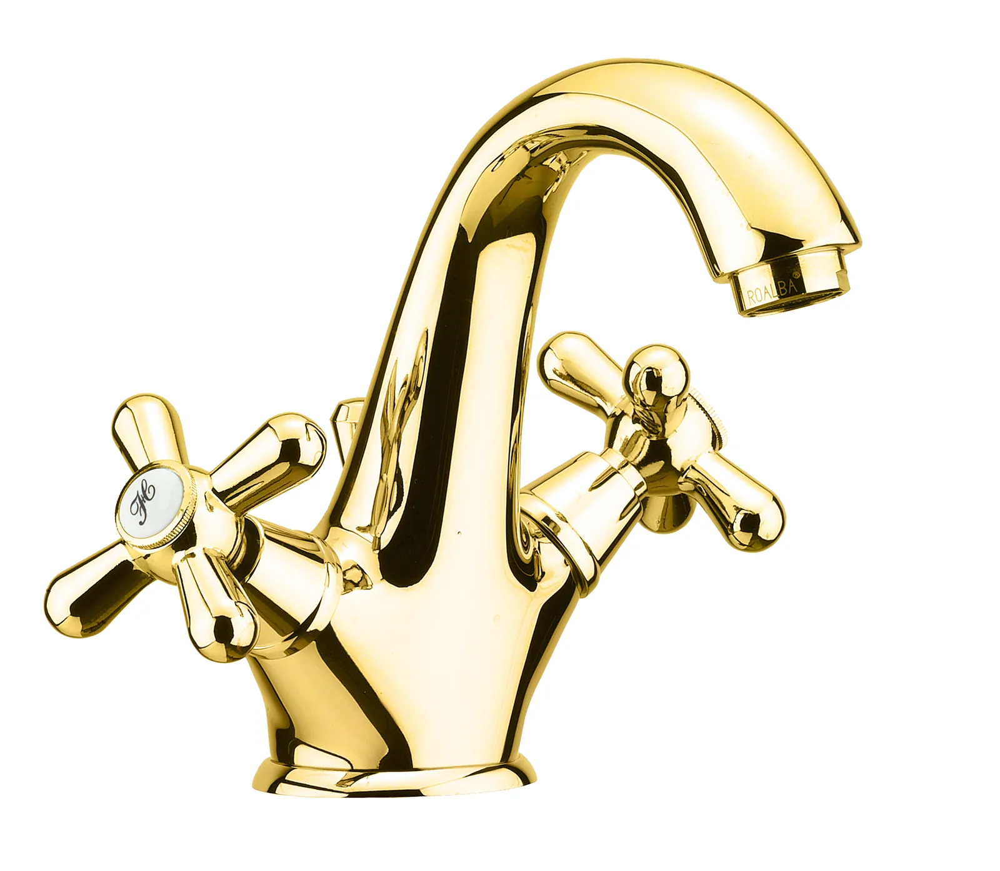
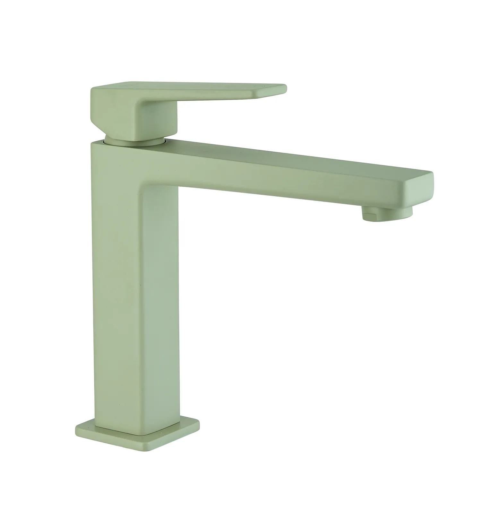
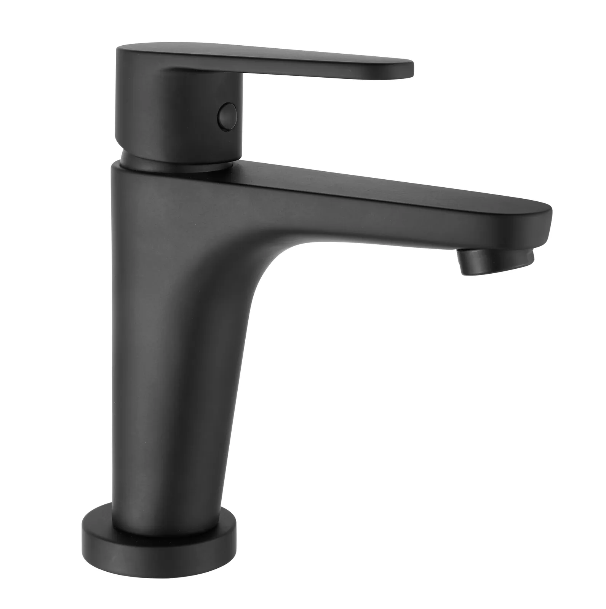
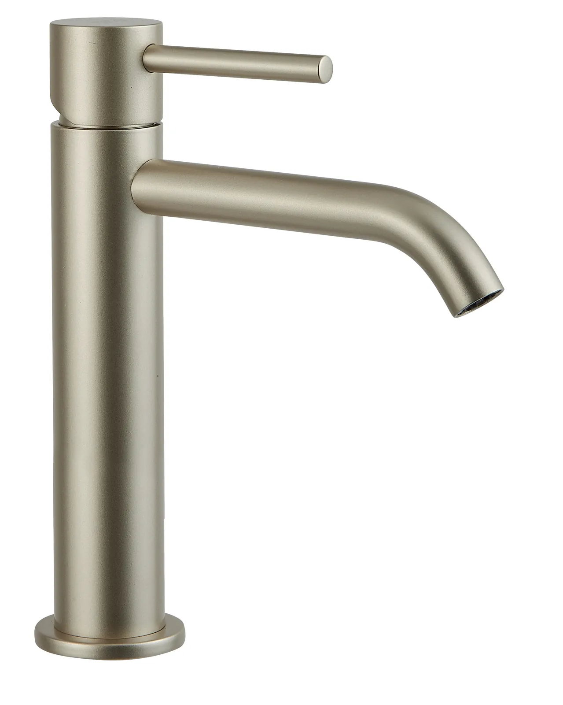
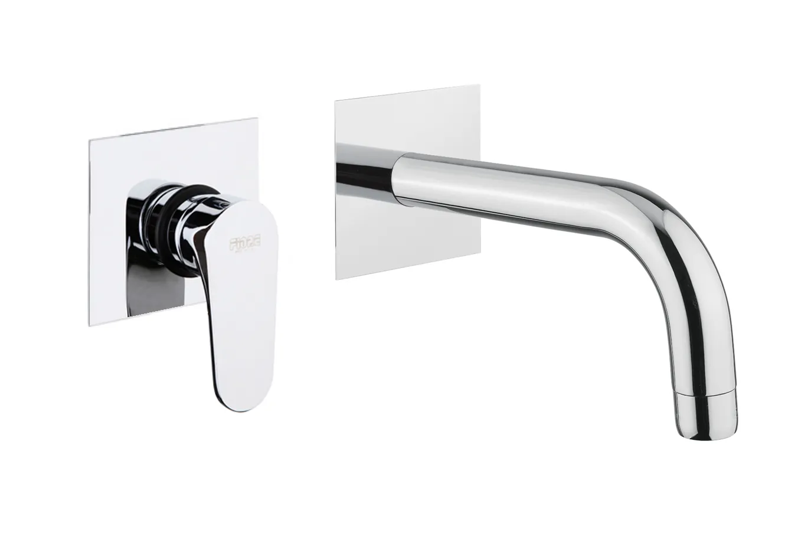
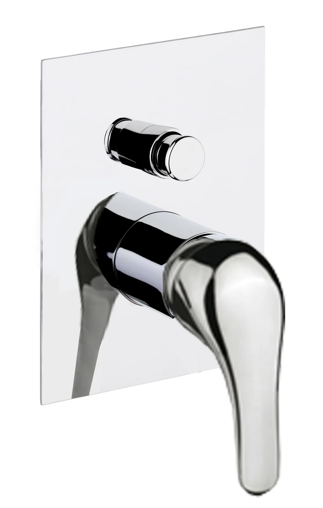
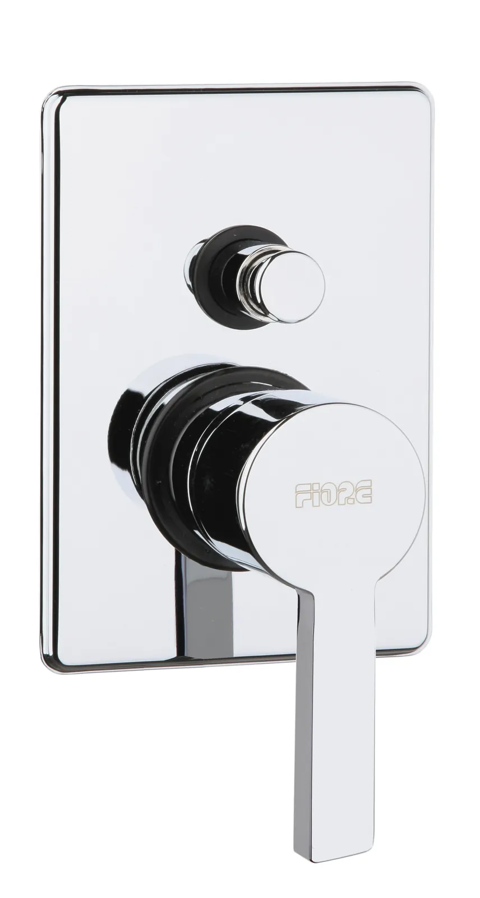

Το νερό,
σχεδιασμένο
στην Ιταλία.
Μπαταρίες και αναμικτήρες για μπάνιο και κουζίνα, σχεδιασμένοι και κατασκευασμένοι στο Borgomanero της Novara. Εξήντα χρόνια εμπειρίας, σε περισσότερες από 80 χώρες.

Kube · Κοβάλτιο
Margot · Χρυσό
Dark · Τόρτορα
Kera · Μαύρο ματ
Xenon · ΣαμπανιζέΜια σειρά για κάθε ύφος.
Από την αυστηρή γεωμετρία της Kube ως το νεοκλασικό Margot. Πατήστε σε μια σειρά για φωτογραφίες, φινιρίσματα και κωδικούς.
25 χρώματα.
Ένα δικό σας μπάνιο.
Δέκα ματ και δεκαπέντε μεταλλικές αποχρώσεις για τις σειρές Kube, Dark, Xenon, Xenon Slim και Hedra. Επιλέξτε ένα χρώμα για να το δείτε.
Πρώτα ο εντοιχισμός.
Η πρόσοψη, όποτε θέλετε.
Ο υδραυλικός τοποθετεί μόνο το στεγανό σώμα. Εσείς αποφασίζετε αργότερα, με την ησυχία σας, το σχέδιο και το χρώμα. Αλλαγή πρόσοψης σε λιγότερο από 3 λεπτά, χωρίς σκόνη και μαστορέματα.
- Στεγανή κατασκευή: καμία υγρασία στον τοίχο, κάθε διαρροή φαίνεται αμέσως στην πρόσοψη.
- Σώματα 1, 2 και 3 εξόδων για ντουζιέρα, και σώμα για νιπτήρα τοίχου.
- Εναλλάξιμες προσόψεις Dark, Kube, Xenon, Xenon Slim, Kevon, Kera και Hedra.



Ένα ταξίδι που ξεκίνησε το 1965.
Το πρώτο εργοστάσιο στη Briga Novarese, Novara.
Πρώτο εργοστάσιο στο San Maurizio d’Opaglio.
Δεύτερο εργοστάσιο στο San Maurizio d’Opaglio.
Η σημερινή έδρα στο Borgomanero, 22.000 m².
60 χρόνια, διανομή σε περισσότερες από 80 χώρες.
Κατάλογος & τιμοκατάλογος 2026
Όλες οι σειρές, οι κωδικοί και τα τεχνικά σχέδια, σε ελληνικά, ιταλικά και αγγλικά.
Προβολή καταλόγων
Πύλη B2B Fiore
Τιμές χονδρικής, διαθεσιμότητα, παραγγελίες και τεχνικά αρχεία για καταστήματα, υδραυλικούς και μελετητές.
Είσοδος στο B2B